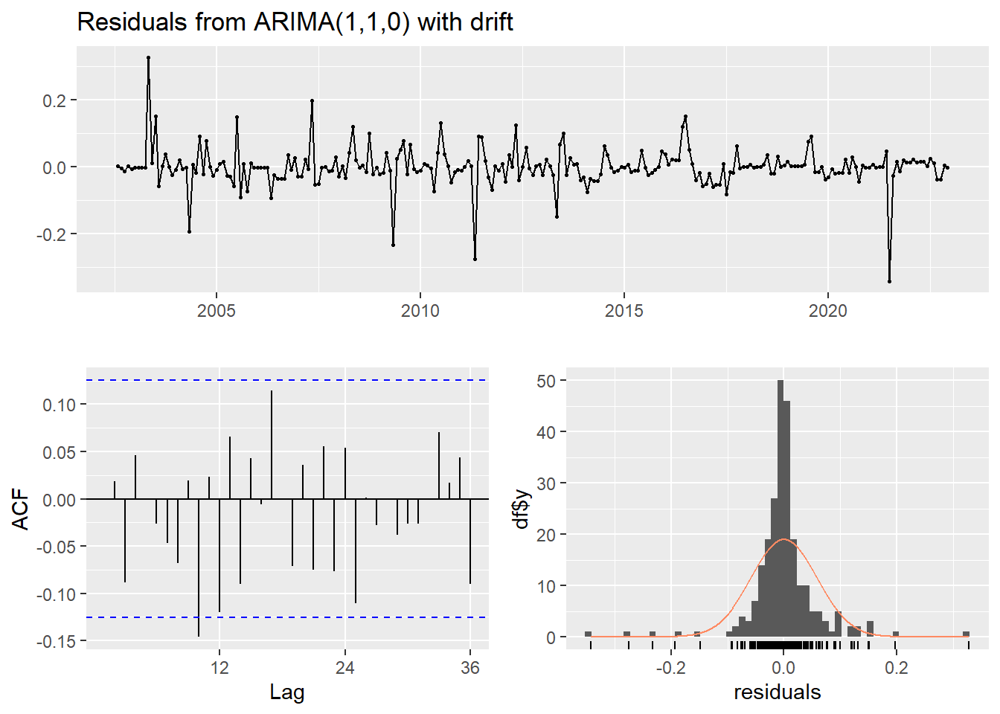
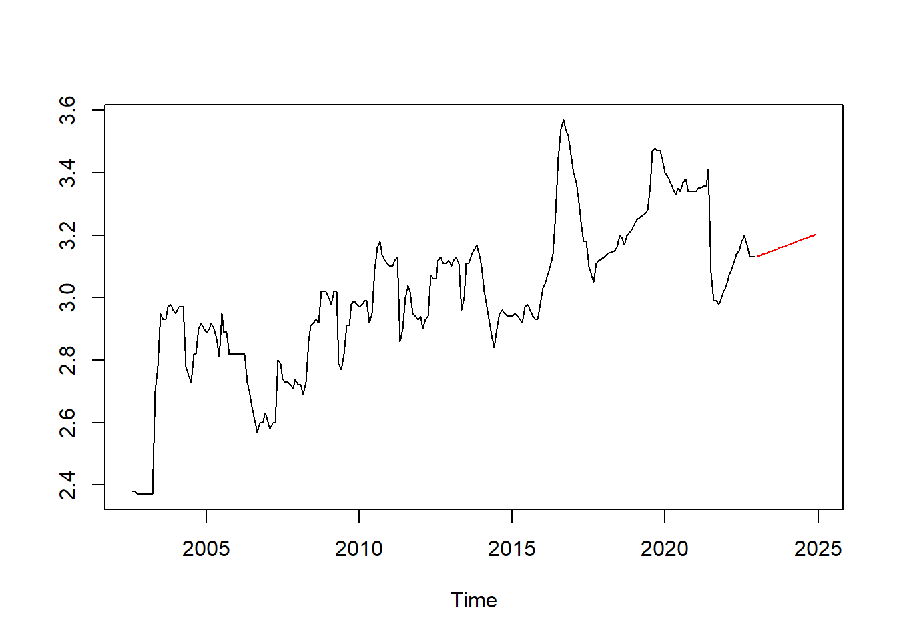
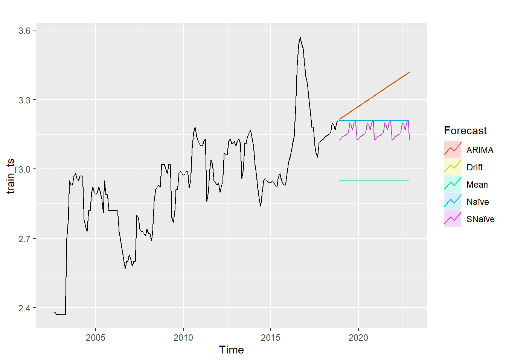
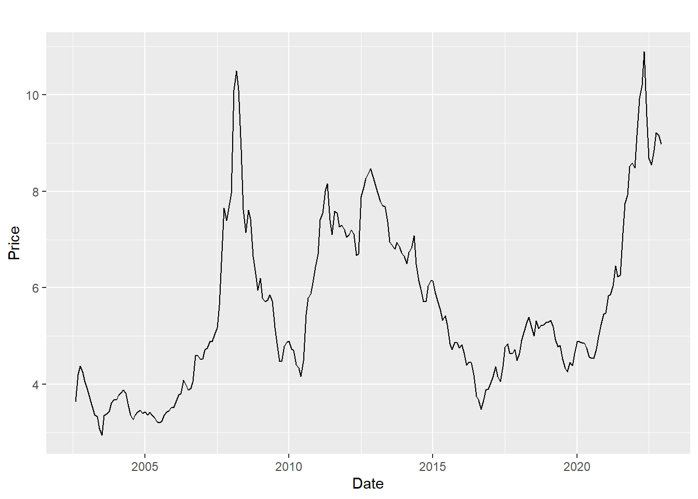
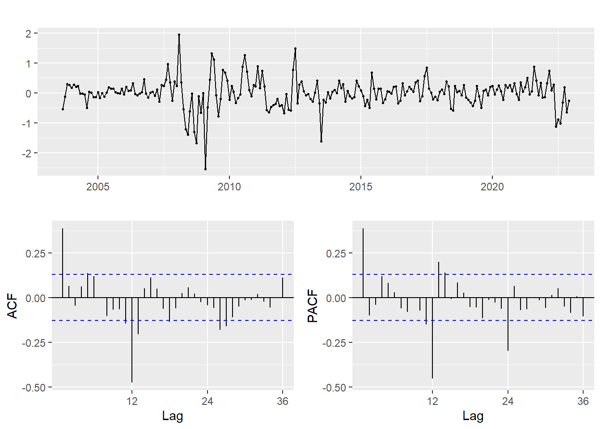

ARMA/ARIMA/SARIMA Models
In this tab, I will focus on using these time series models, such as ARIMA (Auto-regressive integrated moving average) and SARIMA (Seasonal Auto-regressive Integrated Moving Average) to perform some forecasting on the crop production data
USA Wheat Yield (ARIMA Model)
Code
cp = read.csv("./HW3/Monthly_Data.csv")
wheat_usa = cp[cp$Crop=="Wheat",]
colnames(wheat_usa)[4] = c("Yield")
wheat_usa$Yield = na.approx(wheat_usa$Yield)
corn_usa = cp[cp$Crop=="Corn",]
colnames(corn_usa)[4] = c("Yield")
corn_usa$Yield = na.approx(corn_usa$Yield)
start_date = c(2002, 8)
wheat_ts = ts(wheat_usa$Yield, start=start_date, frequency=12)
corn_ts = ts(corn_usa$Yield, start=start_date, frequency=12)From the exploratory data analysis part, there is some important information on the wheat yield data so it will be used in the ARIMA model experiment.
At the step where I plot the ACF and PACF plots, and where I performed the Augmented Dickey-Fuller Test, it is shown that the original time series is stationary. But to get rid of any of the seasonality, I will try doing one differencing on the time series.
Code
diff_ts = diff(wheat_ts)
tseries::adf.test(diff_ts)
Augmented Dickey-Fuller Test
data: diff_ts
Dickey-Fuller = -6.1309, Lag order = 6, p-value = 0.01
alternative hypothesis: stationaryAgain, the Augmented Dickey-Fuller Test (ADF test) can confirm that the time series after differencing is clearly stationary with p-value=0.01.
ACF & PACF plots
First, plot the ACF and PACF plots and decide the order of the AR(p) and MA(q) processes in the ARIMA(p,d,q) model.
Code
ggAcf(diff_ts) + ggtitle("ACF of Monthly Wheat Production in USA")
Code
ggPacf(diff_ts) + ggtitle("PACF of Monthly Wheat Production in USA")
Then, from the ACF and PACF graphs, I will choose a set of values for the parameters: p=(0:1) and q=(0:4). Since I did one differencing to the time series, d=1 in this case.
Fit ARIMA with choices of parameters
Then, I will fit my choice of ARIMA(p,d,q) to the data, and select the model with lowest AIC, BIC.
Code
scores = matrix(rep(0, 5*10), nrow=10, ncol=5)
d=1
for (p in 0:1){
for (q in 0:4){
model = Arima(wheat_ts, order=c(p,d,q), include.drift=TRUE)
scores[p*5+q+1,] = c(p,q,model$aic, model$bic, model$aicc)
}
}
scores = as.data.frame(scores)
colnames(scores) = c("p","q","AIC","BIC","AICC")
knitr::kable(scores, format="pipe", padding=30, digits=2)| p | q | AIC | BIC | AICC |
|---|---|---|---|---|
| 0 | 0 | -679.11 | -672.11 | -679.06 |
| 0 | 1 | -686.67 | -676.18 | -686.57 |
| 0 | 2 | -686.04 | -672.05 | -685.87 |
| 0 | 3 | -685.74 | -668.25 | -685.48 |
| 0 | 4 | -683.87 | -662.89 | -683.51 |
| 1 | 0 | -687.41 | -676.92 | -687.31 |
| 1 | 1 | -685.41 | -671.42 | -685.25 |
| 1 | 2 | -685.48 | -668.00 | -685.23 |
| 1 | 3 | -683.87 | -662.89 | -683.52 |
| 1 | 4 | -681.87 | -657.39 | -681.39 |
From the results of the AIC and BIC scores, I can determine that the model with the lowest AIC, BIC has parameters p=1, q=0. Therefore, the model will be ARIMA(1,1,0).
Code
fit10 = Arima(wheat_ts, order=c(1,1,0), include.drift=TRUE)
summary(fit10)Series: wheat_ts
ARIMA(1,1,0) with drift
Coefficients:
ar1 drift
0.2029 0.0031
s.e. 0.0625 0.0047
sigma^2 = 0.003442: log likelihood = 346.71
AIC=-687.41 AICc=-687.31 BIC=-676.92
Training set error measures:
ME RMSE MAE MPE MAPE MASE
Training set 8.570452e-06 0.05830938 0.0328281 -0.006918382 1.102147 0.1870143
ACF1
Training set 0.0004080243Then, the equation of this model is:
\[ (X_t-0.203X_{t-1}=w_t) \]
Model Diagnostic
This part contains some technique overview and diagnostic about this model. I will use some plots to describe about the residuals.
Code
model_output <- capture.output(sarima(wheat_ts,1,1,0))
Code
checkresiduals(fit10)
Ljung-Box test
data: Residuals from ARIMA(1,1,0) with drift
Q* = 27.624, df = 23, p-value = 0.2303
Model df: 1. Total lags used: 24Here is the result of checking residual of the ARIMA(1,1,0) model. From the Ljung-Box test, the residuals should be independent according to a p-value larger than 0.05, and this means the model fits the time series well. From the Q-Q plot we can also see basically the residuals form a normal distribution.
Compare with auto.arima()
To test if my model agrees with the best model chosen by the auto process, I will try to use a `auto.arima()` function for testing.
Code
auto.arima(wheat_ts, seasonal=FALSE, ic = "aic")Series: wheat_ts
ARIMA(0,1,1)
Coefficients:
ma1
0.1876
s.e. 0.0577
sigma^2 = 0.003445: log likelihood = 346.1
AIC=-688.2 AICc=-688.15 BIC=-681.2Apparently the result is different from my chosen model, and the AIC and BIC of the auto result is also larger. This may be because the `auto.arima` function does not search through enough possible parameters to find the model with the best statistics.
Forecasting
Now having my optimal model I can forecast using it with a confidence band. I will then plot the forecasts.
Code
pred = forecast(fit10, 24)
pred_ts = ts(pred$mean, start=c(2023,1), frequency=12)
ts.plot(wheat_ts, pred_ts, gpars = list(col = c("black", "red")))
The forecasting result of 2 years show that there will be a steady increase in the yield of wheat, which follows the general trend of the data, however the actual yield might not look as simple.
Compare with Benchmark
Here, I will compare my optimal ARIMA model with other benchmark methods such as mean, naive, snaive and drift, using MAE and RMSE.
I plan to do this with training and testing sets, where I can train the different models and methods on the training set, and the RMSE of the models on the testing set can be reported and compared.
Code
train_ts = ts(wheat_usa$Yield[1:196], start=c(2002, 8), frequency = 12)
test_ts = ts(wheat_usa$Yield[197:245], start=c(2018, 12), frequency = 12)
arima_train = Arima(train_ts, order=c(1,1,0), include.drift = TRUE)
arima_pred = forecast(arima_train,49)
arima_res = arima_pred$mean-test_ts
mean_pred = meanf(train_ts, h=49)
mean_res = mean_pred$mean-test_ts
naive_pred = naive(train_ts, h=49)
naive_res = naive_pred$mean-test_ts
snaive_pred = snaive(train_ts, h=49)
snaive_res = snaive_pred$mean-test_ts
drift_pred = rwf(train_ts, h=49, drift=TRUE)
drift_res = drift_pred$mean-test_tsCode
arima_rmse = sqrt(mean(arima_res**2))
mean_rmse = sqrt(mean(mean_res**2))
naive_rmse = sqrt(mean(naive_res**2))
snaive_rmse = sqrt(mean(snaive_res**2))
drift_rmse = sqrt(mean(drift_res**2))
comparison = data.frame(
methods=c("ARIMA", "Mean", "Naive", "Snaive", "Drift"),
RMSE=c(arima_rmse, mean_rmse, naive_rmse, snaive_rmse, drift_rmse)
)
knitr::kable(comparison, format="pipe", padding=30, digits=2)| methods | RMSE |
|---|---|
| ARIMA | 0.20 |
| Mean | 0.34 |
| Naive | 0.15 |
| Snaive | 0.18 |
| Drift | 0.20 |
Based on the result of the comparison, the RMSE of the optimal ARIMA model is much less than the mean method, the same as the Drift method, but a little larger than Naive and Snaive method. The numbers here show that the ARIMA model has a decent performance on the wheat production time series.
Then, I will compare the forcasts results using a plot.
Code
autoplot(train_ts) +
autolayer(meanf(train_ts, h=49),
series="Mean", PI=FALSE) +
autolayer(naive(train_ts, h=49),
series="Naïve", PI=FALSE) +
autolayer(snaive(train_ts, h=49),
series="SNaïve", PI=FALSE)+
autolayer(rwf(train_ts, h=49, drift=TRUE),
series="Drift", PI=FALSE)+
autolayer(forecast(arima_train, 49),
series="ARIMA",PI=FALSE) +
guides(colour=guide_legend(title="Forecast"))
It seems that the ARIMA(1,1,0) model gives a forecast that is simple and basically follows the previous trend, and is basically the same as the forecast of the drift method. Except for mean method which is far off, the other methods give relatively reliable forecasts.
USA Wheat Price (SARIMA Model)
At this step I will move on to another focus of this project, the price of the wheat in the United States. First, look at the plot and the decompose of the wheat price time series:
Code
usa_wheat = read.csv("./HW4/USA_Wheat.csv")
usa_wheat$Price = na.approx(usa_wheat$Price)
start_date = c(2002, 8)
price_ts = ts(usa_wheat$Price, start=start_date, frequency=12)
autoplot(price_ts)+xlab("Date")+ylab("Price")
Code
autoplot(decompose(price_ts, "additive"))
It looks like the trend of the wheat price is not clear through out the years, and the seasonality is obvious.
Check for stationarity
To check the seasonal component and the stationarity, I will use a ACF graph and a test:
Code
ggAcf(price_ts,200)
Code
tseries::adf.test(price_ts)
Augmented Dickey-Fuller Test
data: price_ts
Dickey-Fuller = -2.8178, Lag order = 6, p-value = 0.2317
alternative hypothesis: stationaryIt looks like the time series may have seasonal affect, and is definitely not stationary. Therefore, I will do a seasonal difference in addition to a general differencing to the time series.
Code
price_ts %>% diff(lag=12) %>% diff() %>% ggtsdisplay()
Look for the Best Model
Based on the ACF and the PACF plots, it can be inferred that d=1, D=1, p=[0,1,2], q=[0,1,2], P=[1,2], Q=[1,2]. Then, I will fit my choice of SARIMA(p,d,q,P,D,Q) to the data, and select the model with lowest AIC, BIC.
Code
scores = matrix(rep(0, 9*36), nrow=36, ncol=9)
d=1
D=1
i=1
for (p in 0:2){
for (q in 0:2){
for (P in 1:2){
for (Q in 1:2) {
model = sarima(price_ts,p,d,q,P,D,Q,S=12,details=FALSE)
scores[i,] = c(p,d,q,P,D,Q,model$AIC,model$BIC,model$AICc)
i = i+1
}
}
}
}
scores = as.data.frame(scores)
colnames(scores) = c("p","d","q","P","D","Q","AIC","BIC","AICC")
knitr::kable(scores, format="pipe", padding=30, digits=2)| p | d | q | P | D | Q | AIC | BIC | AICC |
|---|---|---|---|---|---|---|---|---|
| 0 | 1 | 0 | 1 | 1 | 1 | 0.82 | 0.87 | 0.82 |
| 0 | 1 | 0 | 1 | 1 | 2 | 0.83 | 0.89 | 0.83 |
| 0 | 1 | 0 | 2 | 1 | 1 | 0.83 | 0.89 | 0.83 |
| 0 | 1 | 0 | 2 | 1 | 2 | 0.83 | 0.90 | 0.83 |
| 0 | 1 | 1 | 1 | 1 | 1 | 0.69 | 0.75 | 0.69 |
| 0 | 1 | 1 | 1 | 1 | 2 | 0.69 | 0.76 | 0.69 |
| 0 | 1 | 1 | 2 | 1 | 1 | 0.69 | 0.76 | 0.69 |
| 0 | 1 | 1 | 2 | 1 | 2 | 0.69 | 0.78 | 0.70 |
| 0 | 1 | 2 | 1 | 1 | 1 | 0.68 | 0.76 | 0.68 |
| 0 | 1 | 2 | 1 | 1 | 2 | 0.69 | 0.77 | 0.69 |
| 0 | 1 | 2 | 2 | 1 | 1 | 0.69 | 0.78 | 0.69 |
| 0 | 1 | 2 | 2 | 1 | 2 | 0.69 | 0.79 | 0.69 |
| 1 | 1 | 0 | 1 | 1 | 1 | 0.69 | 0.75 | 0.69 |
| 1 | 1 | 0 | 1 | 1 | 2 | 0.70 | 0.77 | 0.70 |
| 1 | 1 | 0 | 2 | 1 | 1 | 0.69 | 0.77 | 0.70 |
| 1 | 1 | 0 | 2 | 1 | 2 | 0.70 | 0.79 | 0.70 |
| 1 | 1 | 1 | 1 | 1 | 1 | 0.69 | 0.76 | 0.69 |
| 1 | 1 | 1 | 1 | 1 | 2 | 0.69 | 0.78 | 0.70 |
| 1 | 1 | 1 | 2 | 1 | 1 | 0.69 | 0.78 | 0.69 |
| 1 | 1 | 1 | 2 | 1 | 2 | 0.70 | 0.80 | 0.70 |
| 1 | 1 | 2 | 1 | 1 | 1 | 0.69 | 0.78 | 0.69 |
| 1 | 1 | 2 | 1 | 1 | 2 | 0.69 | 0.79 | 0.69 |
| 1 | 1 | 2 | 2 | 1 | 1 | 0.69 | 0.80 | 0.69 |
| 1 | 1 | 2 | 2 | 1 | 2 | 0.70 | 0.81 | 0.70 |
| 2 | 1 | 0 | 1 | 1 | 1 | 0.68 | 0.76 | 0.68 |
| 2 | 1 | 0 | 1 | 1 | 2 | 0.68 | 0.77 | 0.69 |
| 2 | 1 | 0 | 2 | 1 | 1 | 0.69 | 0.78 | 0.69 |
| 2 | 1 | 0 | 2 | 1 | 2 | 0.69 | 0.79 | 0.69 |
| 2 | 1 | 1 | 1 | 1 | 1 | 0.69 | 0.78 | 0.69 |
| 2 | 1 | 1 | 1 | 1 | 2 | 0.69 | 0.80 | 0.69 |
| 2 | 1 | 1 | 2 | 1 | 1 | 0.69 | 0.80 | 0.69 |
| 2 | 1 | 1 | 2 | 1 | 2 | 0.70 | 0.82 | 0.70 |
| 2 | 1 | 2 | 1 | 1 | 1 | 0.68 | 0.79 | 0.68 |
| 2 | 1 | 2 | 1 | 1 | 2 | 0.68 | 0.80 | 0.68 |
| 2 | 1 | 2 | 2 | 1 | 1 | 0.69 | 0.81 | 0.69 |
| 2 | 1 | 2 | 2 | 1 | 2 | 0.69 | 0.82 | 0.69 |
From the results of the scores, it can be determined that the best model would be SARIMA(0,1,2,1,1,1).
Code
fit012 = Arima(price_ts, order=c(0,1,2), seasonal=c(1,1,1))
summary(fit012)Series: price_ts
ARIMA(0,1,2)(1,1,1)[12]
Coefficients:
ma1 ma2 sar1 sma1
0.4220 0.1230 -0.0710 -1.000
s.e. 0.0676 0.0713 0.0713 0.069
sigma^2 = 0.09584: log likelihood = -74.13
AIC=158.26 AICc=158.52 BIC=175.49
Training set error measures:
ME RMSE MAE MPE MAPE MASE
Training set 0.004072782 0.2986528 0.1958307 0.02357084 3.312105 0.1574702
ACF1
Training set -0.00670955Forecasting
Having the optimal SARIMA model, I can forecast the price of wheat for the next two years.
Code
sarima.for(price_ts,24,0,1,2,1,1,1,12)
$pred
Jan Feb Mar Apr May Jun Jul Aug
2023 8.950891 9.058484 9.074394 9.041436 8.962985 8.766962 8.702220 8.872337
2024 9.183499 9.346926 9.416358 9.404903 9.381704 9.103776 8.982589 9.130696
Sep Oct Nov Dec
2023 8.955317 9.052678 9.129206 9.145295
2024 9.229079 9.345081 9.412628 9.414799
$se
Jan Feb Mar Apr May Jun Jul
2023 0.3145333 0.5467826 0.7315215 0.8782234 1.0037075 1.1151598 1.2164421
2024 1.6990807 1.7642477 1.8268598 1.8873960 1.9460499 2.0029870 2.0583297
Aug Sep Oct Nov Dec
2023 1.3098930 1.3969359 1.4788645 1.5564865 1.6304173
2024 2.1121452 2.1643771 2.2153779 2.2652308 2.3140098From the forecast, it seems that the future prices are stable, however the confidence band seems to be large.
Compare with Benchmark
Code
train_ts = ts(usa_wheat$Price[1:196], start=c(2002, 8), frequency = 12)
test_ts = ts(usa_wheat$Price[197:245], start=c(2018, 12), frequency = 12)
sarima_pred = sarima.for(train_ts,49,0,1,2,1,1,1,12,plot=FALSE)$pred
sarima_res = sarima_pred-test_ts
mean_pred = meanf(train_ts, h=49)
mean_res = mean_pred$mean-test_ts
naive_pred = naive(train_ts, h=49)
naive_res = naive_pred$mean-test_ts
snaive_pred = snaive(train_ts, h=49)
snaive_res = snaive_pred$mean-test_ts
drift_pred = rwf(train_ts, h=49, drift=TRUE)
drift_res = drift_pred$mean-test_ts
sarima_rmse = sqrt(mean(sarima_res**2))
mean_rmse = sqrt(mean(mean_res**2))
naive_rmse = sqrt(mean(naive_res**2))
snaive_rmse = sqrt(mean(snaive_res**2))
drift_rmse = sqrt(mean(drift_res**2))
comparison = data.frame(
methods=c("SARIMA", "Mean", "Naive", "Snaive", "Drift"),
RMSE=c(sarima_rmse, mean_rmse, naive_rmse, snaive_rmse, drift_rmse)
)
knitr::kable(comparison, format="pipe", padding=30, digits=2)| methods | RMSE |
|---|---|
| SARIMA | 2.11 |
| Mean | 2.22 |
| Naive | 2.29 |
| Snaive | 2.38 |
| Drift | 2.10 |
From the numbers, the optimal SARIMA model has smaller RMSE than every benchmark methods except for drift method, meaning that it is performing really well on the wheat price time series.
Code
autoplot(train_ts) +
autolayer(meanf(train_ts, h=49),
series="Mean", PI=FALSE) +
autolayer(naive(train_ts, h=49),
series="Naïve", PI=FALSE) +
autolayer(snaive(train_ts, h=49),
series="SNaïve", PI=FALSE)+
autolayer(rwf(train_ts, h=49, drift=TRUE),
series="Drift", PI=FALSE)+
autolayer(sarima_pred,
series="SARIMA",PI=FALSE) +
guides(colour=guide_legend(title="Forecast"))
It seems that compared to the SARIMA(0,1,2,1,1,1) model the SNaive method’s forecast is similar in shape, while the other three methods create simpler forecasts.
Seasonal Cross Validation
For this step, I will perform a seasonal cross validation on the model, first with 1 step ahead forecasts and then 12 (the seasonal period of the time series) step ahead forecast.
Code
set.seed(140)
farima1 = function(x, h){forecast(Arima(x, order=c(0,1,2),seasonal = c(1,1,1)), h=h)}
e1 = tsCV(price_ts, farima1, h=1)
RMSE1 = sqrt(mean(e1^2, na.rm=TRUE))
print(RMSE1)[1] 0.3747683Code
farima12 = function(x, h){forecast(Arima(x, order=c(0,1,2),seasonal = c(1,1,1)), h=h)}
e12 = tsCV(price_ts, farima12, h=12)
RMSE12 = sqrt(mean(e12^2, na.rm=TRUE))
print(RMSE12)[1] 1.467905Code
print(summary(fit012))Series: price_ts
ARIMA(0,1,2)(1,1,1)[12]
Coefficients:
ma1 ma2 sar1 sma1
0.4220 0.1230 -0.0710 -1.000
s.e. 0.0676 0.0713 0.0713 0.069
sigma^2 = 0.09584: log likelihood = -74.13
AIC=158.26 AICc=158.52 BIC=175.49
Training set error measures:
ME RMSE MAE MPE MAPE MASE
Training set 0.004072782 0.2986528 0.1958307 0.02357084 3.312105 0.1574702
ACF1
Training set -0.00670955The 12 steps ahead forecasting works by first using a part of the data as training set (1st,2nd,…,kth), and then using the (k+12)th observation as the validation. For the next iteration, the training set will then include the (k+1)th observation, where the validation set will be the (k+13)th observation. This procedure is repeated through the whole data set.
From the results above, we can see that the forecasts using 1 step ahead have smaller RMSE than using 12 steps ahead, while the original model has the lowest RMSE.